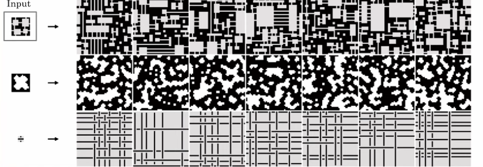

Notes on Dungeon Generation via WaveFunctionCollapse
procedural-generation
notes
My notes from Brian Bucklew’s talk on procedurally generating dungeon levels using the WaveFunctionCollapse algorithm.
Overview
Here are some notes I took while watching Brian Bucklew’s talk covering how to use the WaveFunctionCollapse algorithm to procedurally generate dungeon levels.
WaveFunctionCollapse
- Developed by Maxim Gumin and released as open source in 2016
- GitHub Repository
- Caves of Qud was the first commercial use, many others quickly followed.
WaveFunctionCollapse Textures and Tiles
- WFC hast two primary modes of function, tile maps and textures
- The tilemap generation mode creates tile set solutions via propagation of defined tile adjacency constraints.
- Caves of Qud uses Texture Mode
Texture Mode
Easy training inputs (small (e.g. 16x16) training images that can be easily created in tools like mspaint)
Powerful outputs (arbitrarily large output textures that are locally similar to the input)

How it Works
- The input texture is divided into \(NxN\) (e.g. 3x3) subtextures (tiles) and their overlap with other tiles is calculated (e.g. overlap neighboring tiles by 1 on each side).
- Can rotate and reflect the input texture to increase the number of available tiles
- The output is initialized with each pixel being a full superposition of possible output tiles.
- Imagine placing the stack of subtexture tiles on each pixel in the output image
- The (3x3) tiles overlap at the edges
- The lowest entropy \(NxN\) (e.g. 3x3) area is selected from the output and one option is selected at random from the remaining possibilities.
- Pick a random (or lowest entropy) pixel location in the output image
- Pick a random tile from the stack for that pixel location
- That final value for that pixel location in the output image is set to the value at the center of the (3x3) tile that was selected
- All other potential tiles in the stack for that pixel location are discarded (i.e. the stack collapses)
- New information based on that selection are propagated (like a wave) to adjacent areas, removing possibilities that won’t properly overlap.
- Remove the tiles from the stacks for the neighboring pixel locations that are not compatible with the selected tile for the finalized pixel location
- Select the neighboring pixel location with the smallest remaining tile stack (i.e. lowest entropy)
- Pick a random option from the remaining compatible tiles
- Repeat for the neighboring tiles around that pixel location
- If any elements are still uncollapsed go to step 2.
- Select the pixel location with the smallest remaining tile stack
Quick Code Example
// Input: the training image
// N: How large of blocks NxN (e.g. 3x3) to sample from the input as input patterns.
// Note: Higher N leads to rising CPU and memory cost)
// Width: The output width
// Height: The output height
// periodicInput: Whether to sample the input across edges
// perdiodic: Whether the output should be sampled across edges to create edge-wrapping output
// symmetry: A value between 1..8, indicating how many reflection and rotation symmetries should be sampled from the input
var model = new OverlappingModel(input, N:3, width:48, height:48, periodicInput:true, periodic:false, symmetry:8, ground: 0);
model.Run(random.Next, limit:0);
model.Graphics().Save($"output.png");Problem 0 - Scaling
- The execution time scales with the input resolution
- Memory usage scales with tile size
Problem 1 - Homogeneity
- The output just goes on forever in every direction
- There is no inherent large scale structure
Solution
- Perform a preprocess pass for map segmentation
- Partition large scale chunks (shapes) whose interior walls are generated by WFC.
- Add additional details with subsequent passes
- Fill in the chunks with different WFC pass using new input
- Can use algorithms like A* to find broken connectivity (e.g. find places to put doors)
Problem 2 - Overfitting
- Adding more detail often results in overfitting small details, reducing the variability of the output
Solution:
- Use WFC to create overall architecture
- Create additional detail and connectivity (doors, etc) with follow-up passes
Additional Reading
“WaveFunctionCollapse is Constraint Solving in the Wild”
Isaackarth.com: WaveFunctionCollapse is Constraint Solving in the Wild
Wave Function Collapse Explained
References: